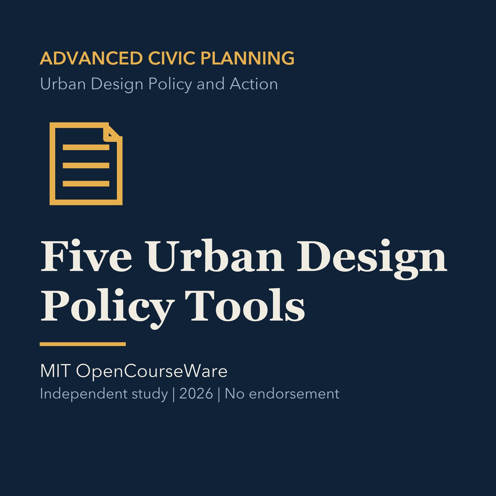

EPISODE 16
The Five Urban Design Policy Tools
Compares regulation, investment, incentives, information, and coordination as design tools.

- Stable GUID
352277e9-be3f-5d68-95df-5c2de92cd13b- Release
- advanced-civic-planning-v2026.3
- SHA-256
912fb5fad704791c14f9cb06093da4b3504235f85d279ccebbb3a94e0ec0b5ce